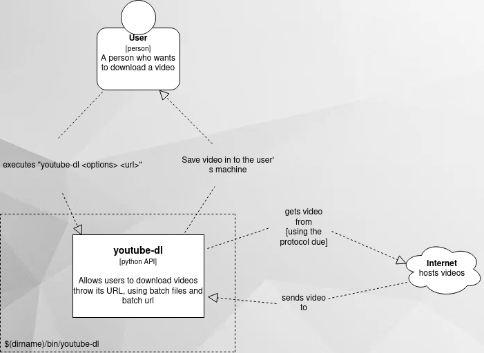

Documentação arquitetural para o Youtube-dl
–
Autores
Este documento foi produzido por Thaynnara Raiany Uchôa Gonçalves.
- Matrícula: 115210050
- Contato: thaynnara.goncalves@ccc.ufcg.edu.br
- Projeto documentado: https://github.com/ytdl-org/youtube-dl
Descrição Arquitetural – Serviço de downloads de vídeos
Este documento foi produzido para a disciplina de Arquitetura de Software da UFCG, e tem como objetivo descrever parte da arquitetura do projeto Youtube-dl, usando como base, principalmente, o modelo C4.
Descrição Geral sobre o Youtube-dl
O youtube-dl é um projeto open-source que permite ao usuário, via comandos do terminal, fazer o download de vídeos, a partir da url do mesmo, de alguma plataforma na internet. Sendo, dentre essas, com foco no Youtube.
Contexto
O sistema é instalado na máquina do usuário, logo, este é executado por linha de comando, no terminal. Sendo assim, o usuário chama a aplicação, passando a url do vídeo a ser baixado. Logo mais, a aplicação busca o vídeo na internet, a partir da url, e o salva do disco do usuário.
Abaixo está o diagrama de contexto.

Containers
Youtube-dl API
O sistema é instalado na máquina do usuário, no diretório $(dirname)/bin/youtube-dl, logo o mesmo é executado na própria máquina do usuário. Neste contexto, a aplicação é executado por linha de comando,
$ youtube-dl <options> <url>
Onde o comando ‘youtube-dl’ está configurado para executar, com o python instalado na maquina do usuário, a aplicação salva em /bin/youtube-dl.
Sendo assim, o usuário chama a aplicação com o comando youtube-dl, passando a url do vídeo a ser baixado e opções para o dowload, se desejar ou se o site onde o video está hospedado, requerir. Logo mais, a aplicação busca o vídeo via batch files e batch url, usando o protocolo adequado a cada requisição, e por fim o salva no disco do usuário, no diretório onde foi feita a chamada a aplicação.
Abaixo está o diagrama de containers.

Componentes
Abaixo está o diagrama de componentes.

Options
O options é o módulo responsável por fazer a validação da entrada dada pelo usuário, mas especificamente quanto a veracidade da url e o mapeamento dos parâmetros opcionais.
- Tecnologias
- Este módulo faz uso do otparse para o recebimento das entradas.
Extractor
Este módulo é composto por varios InfoExtractors, cada um responsável por extrair a informação necessária da url por domínio específico. Ou seja, existe um InfoExtractor para cada domíminio suportado pela aplicação, por exemplo o Youtube, que tem seu pŕoprio InfoExtractor.
Nesse contexto, o Extractor, dada uma url, pega o primerio InfoExtractor capaz de lidar com a mesma e extrai as informações necessárias e faz o mapeamento com as opções passadas, na chamada da aplicação, se for o caso.
Youtube-dl
Aqui é feito o gerenciamente do fluxo da informação. Neste módulo a informação é recebida, depois dada ao Extractor, que retorna todas as informações requeridas e no formato ideal. Logo mais, a informação extraida é dada ao Downloader.
- Tecnologias
- Aqui é feito o uso de Cache paras as urls
Downloader
Este módulo é responsavel por fazer o download do vídeo e o salva-lo do disco do usuário. Sendo assim, aqui existem vários Files Downloader, os quais cada um tem como função baixar os dados do vídeo de acordo com diferentes protocolos. Logo, em Downloader é encontrado o File Downloader para aquele vídeo a partir do protocolo que deve ser usado para baixar o mesmo.
Por exemplo, ao se deparar com um url do Youtube, é escolhido o File Downloader HTTP, pois os downloads de videos pelo Youtube funciona a partir do protocolo http.
Por fim, os dados, que chegam em formato JSON, ao final do Download, sofrem um pós processamento, por parte do PostProcessor, para então ser salvo no computador do usuário.
PostProcessor
Responsável por processar os dados, em formato de JSON, baixados do vídeo, os reconstruindo novamente para o formato original
Código
Nesta etapa não faremos diagramas que apresentam detalhes da implementação. Faremos isso mais adiante.
Visão de Informação
A url é primeiramente passada pelo usuário, que primeiramente é validada, em seguida é destinada a um InfoExtractor responsável por aquele domínio, o qual ira extrair as informações adequadas da url, estas então são dadas a um File Downloader, adequada para as mesmas, que irá usa-la para fazer o download do vídeo.